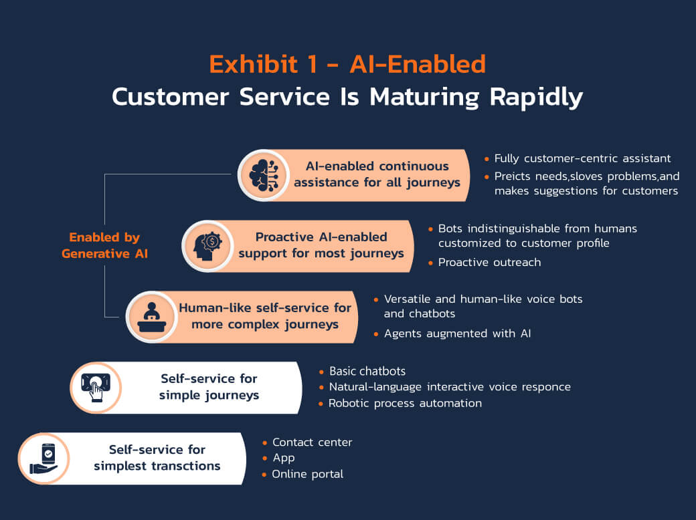

- The correct binding of customer service and AI tools delivers more efficient and improved customer satisfaction.
- AI can provide more efficient and personalized customer service.
- Companies should start using off-the-shelf systems for high-value use cases to increase the accuracy of chat channels.
Customer service centers are revolutionizing today. Service agents face issues like record case volumes and customers are hassled more with ever-increasing wait times. Often, to manage caseload, agents will simultaneously work on multiple customers' issues while waiting for data to load from legacy systems. This leads to more complexities.
Once an agent closes a case and enters the case note. Sometimes, these notes may lost or other agents may already be troubleshooting similar issues from scratch, not realizing that their colleague has already fixed them. These are the problems with existing customer service systems.
The buzz around ChatGPT, a generative artificial intelligence (AI) model developed by OpenAI, is high these days. GPT and other generative AI models such as Anthropic and Bard are built on pre-trained, large language models that help users generate unique text, images, and other content from text-based instructions.
Combining Salesforce's long-standing expertise in AI, generative AI models will change the game for customer service, helping companies to operate efficiently, develop more empathetic responses to customer requests, and resolve cases quickly.
The large language models (LLMs) built into ChatGPT and other text-based generative AI applications give the apps the power to use human-like text and voice to respond to prompts and easily answer complex questions.
The public has quickly begun testing the capabilities of generative AI, and the technology is rapidly gaining acceptance, with the diversity and nature of the responses it provides being praised. This makes it natural for customer service processes, we can calculate that once the technology is implemented at scale, productivity can be increased by 30% to 50%.
Yet inquiries and challenges stay. LLM-based chatbots are trained on data that includes inner biases and can make inaccuracies, a real problem in corporate contexts when a few errors can cost a business significant expenses to its bottom line and prestige. This partly explains why almost all existing full deployments of generative AI in a customer service setting require some human oversight or provide non-critical services such as offering vacation ideas on travel websites.
Corporations looking to incorporate this powerful new technology into their customer care processes need to resolve which use cases will produce the most value and steps to set themselves up for victory while bypassing pitfalls. Generative AI will deliver a way forward for businesses keen to increase their customer service procedures.
The Maturity Path of AI-Enabled Customer Service

Steps 1 & 2 are the basic and traditional way of customer querying service. In Step 3, mainly driving reactive use issues that will continue to put humans in the loop. It can solve more difficult customer queries. This capability, along with the power to interact with consumers like a human agent with a tone of voice and responsiveness, will continue to enhance the consumer experience.
In the 4th Step, AI can help with most of the customer's queries. Businesses will shift from responding to questions to proactively cracking problems, thereby further improving the customer experience. AI-enabled aids will reach out instantly to customers, presenting aggressive solutions to ordinary problems rather than responding to queries after the problem has happened.
Finally, in Step 5, AI-enabled support will be available for all user journeys. Generative AI can help service bots customize to the exact needs of individual customers, functioning as a personal assistant that fully comprehends customers' connection with the company, anticipates their requirements and problems, and interacts with other systems in the company of the customer life cycle.
How AI will look like for customer service
Generative AI will take service processes to the next level of efficiency and customization. Embedded on top of Einstein for Service will make the ability to automatically generate personalized responses for agents to email or text customers quickly.
We can train AI on every case note ever written by every agent in the company to automatically generate drafts of knowledge articles for human review, drastically cutting knowledge creation time and making it easier to keep articles up-to-date. The increased relevancy and quality of knowledge across the organization will make self-service portals and chatbots even more useful, releasing human agents to spend more time on complex topics and building long-term customer connections.
The advancement in the service field with generative AI for frontline service teams and customers is notable nowadays. Frontline operators will save time in the field with automated reports. AI-generated directions can support new workers and contractors onboard easily and leverage current learning resources to enhance their skills.
The current wave of generative models is mighty, but in a few numbers of cases, they can deliver biased and destructive outputs and fabricated facts. That's why keeping a human analyst in the loop, whether it's a service agent or an expert is important going forward.
Here are the 3 ways:
1. Great-powered Chatbots
Combining generative AI on top of Einstein capabilities will automate the development of smart, personalized chatbot replies that can deeply understand, anticipate, and respond to customer issues quickly. It will empower well-informed answers to sensitive customer questions, helping to increase first-time resolution rates. By merging generative AI with customer resolution data to analyze conversational sentiment and patterns, service organizations can drive continuous improvement, identify the latest trends, and accelerate chatbot training and updates.
2. Auto-generated Knowledge Articles
The result of an automatically generated knowledge article will ease the pressure on call centers and agents. How is that? The use of generative AI to draft knowledge articles based on case notes, Slack conversations, messaging history, and user data, and generative AI has a crucial role to play in accelerating agent case resolution and moving more support cases into self-service experiences.
3. Hasten Case Swarming
Many service teams are embracing case swarming with both hands, where agents bring in experts from across their organization to help solve complex cases or large incidents. Case swarming is a collaborative support model when it is embedded with Salesforce and Slack that enables service agents to create Slack channels or threads dedicated to specific customer cases. Use of generative AI in customer service to identify similar past cases; Identify who in the organization has the best and relevant skills to solve the problem; and recommend resolutions and customer communications to fast track and automate many aspects of the case pool.
Conclusion
Generative AI in customer service is becoming more mature, helping companies gain confidence in their performance, reducing the need for human supervision, and allowing them to interact directly with customers. For these to happen, a set of processes such as relevance, quality, and security of training data need to work correctly; the Ability to eliminate accuracy and bias; and specific use cases where AI is applied. As the benefits of generative AI surge, despite the risks and challenges, companies are moving to incorporate the technology into customer care at an unprecedented pace.
CO-Founder
Yokesh Sankar, Co-Founder and Chief Operating Officer of Sparkout Tech Solutions, leverages his expertise to drive innovation and operational excellence in the software industry. Passionate about empowering individuals with essential skills, he uses technology to streamline business processes and enhance efficiency. He advocates for AI and blockchain adoption, helping businesses integrate these technologies seamlessly into their operations. Staying ahead of AI trends, Yokesh explores industry applications and shares insights to foster growth and knowledge in the tech sector.